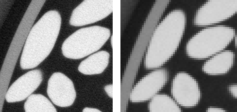
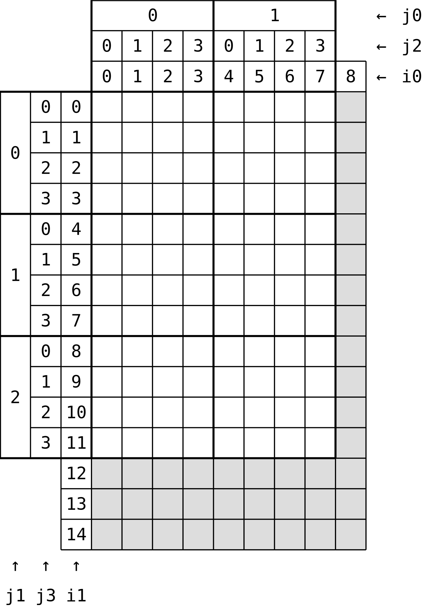

The full reconstructed image resulting from the tomography experiment described in the second instalment of this series is a 1747×1751×688 stack. The voxel size is about 0.030 mm. This is far too much for the purpose of the present study, since all we are interested in is the determination of the location (coordinates of the centroid) and orientation (principal axes of inertia) of the rice grains. In order to reduce the computation time, the images will first be binned, that is each set of (say) 4×4×4 voxels will be replaced with a unique voxel, with average gray value (see below for an illustration). 3D binning would usually require three uggly nested loops. There is, however, a much more pythonic way. This is the topic of the present post.

Zen of NumPy
You probably have all heard of Tim Peters’ Zen of Python, which you can display in the Python console through the command import this. A few years ago, Travis Oliphant, who is the author of NumPy (but also CEO of Continuum Analytics, which provides Anaconda), wrote a post called Zen of NumPy, in which he came up with the following points
Contiguous is better than strided
Descriptive is better than imperative (use data-types)
Array-oriented is often better than object-oriented
Broadcasting is a great idea – use where possible
Vectorized is better than an explicit loop
Unless it’s complicated — then use numexpr, weave, or Cython
Think in higher dimensions
We will be particularly interested in the last point: “think in higher dimensions”; this, and the numpy.lib.stride_tricks.as_strided() function are the crux of the present post.
Binning a 2D array: using loops
We eventually want to perform binning on a 3D array (a stack of 2D slices). But, for the sake of illustration, the method will be demonstrated on a 2D array. We must first generate the data.
import numpy as np
np.random.seed(20150324)
a2 = np.random.rand(15, 9)Note that the shape of a2 (the array to be binned) is purposely not a multiple of 4! Also note that, in order to make tests fully reproducible, it is good practice to seed the random generator manually. We then compute the shape of the binned array to be computed.
bin_size = 4
binned_shape = tuple(n//bin_size for n in a2.shape)
'Shape of binned array: {}'.format(binned_shape)'Shape of binned array: (3, 2)'binned1 = np.zeros(binned_shape, dtype=np.float64)
for i0 in range(bin_size*binned_shape[0]):
j0 = i0//bin_size
for i1 in range(bin_size*binned_shape[1]):
j1 = i1//bin_size
binned1[j0, j1] += a2[i0, i1]
binned1 /= bin_size**2
binned1array([[0.52302399, 0.53382782],
[0.45544097, 0.48257402],
[0.48637204, 0.50609471]])This is a bit tedious, isn’t it. Besides, it is appallingly slow! In order to introduce a more elegant solution to this problem, we will first present an even slower solution…
Towards thinking in higher dimensions
Instead of looping over all cells of the original array, we could loop over the cells of the binned array. We then loop over all cells of the original array which contribute to the current cell of the binned array.
binned2 = np.zeros(binned_shape, dtype=np.float64)
for j0 in range(binned_shape[0]):
for j2 in range(bin_size):
i0 = bin_size*j0 + j2
for j1 in range(binned_shape[1]):
for j3 in range(bin_size):
i1 = bin_size*j1 + j3
binned2[j0, j1] += a2[i0, i1]
binned2 /= bin_size**2
binned2array([[0.52302399, 0.53382782],
[0.45544097, 0.48257402],
[0.48637204, 0.50609471]])We can check that both methods lead to the same result
np.linalg.norm(binned2 - binned1)0.0OK, that’s fine. But this solution is even worse than the previous one, since we are now left with four nested loops! However, the above code snippet suggests that we could consider a2 as a four-dimensional array, where all cells are grouped in 4×4 macro-cells, as shown below.

In other words, if we introduced the auxiliary array a4 defined as follows
(1) a4[j0, j1, j2, j3] = a2[bin_size*j0 + j2, bin_size*j1 + j3]then, the binned array could simply be computed through the following NumPy command
binned3 = np.mean(a4, axis=(-1, -2))In the next section, we will show that creation of a4 with NumPy is actually straightforward, and entails no data copy.
Stride tricks
The present approach works only for strided arrays. In the above example, the data of array a2 is actually stored in a 1D array (let’s call it data), and the offset of element (i0, i1) is given by s0*i0 + s1*i1, where (s0, s1) are the strides (as returned by a2.strides) of the n-dimensional array. In other words, we have for all i0 and i1
(2) a2[i0, i1] == data[s0*i0 + s1*i1]Now, going back to the construction of the four-dimensional array a4. We want to enforce (1); using (2), we find that
a4[j0, j1, j2, j3] = data[s0*(j0*bin_size + j2) + s1*(j1*bin_size + j3)]
= data[s0*j0 + s1*j1 + s0*bin_size*j2 + s1*bin_size*j3]Therefore, a4 can be built as a strided array, using the same data array as a2, with strides (s0, s1, s0*bin_size, s1*bin_size). The NumPy function numpy.lib.stride_tricks.as_strided does just that:
numpy.lib.stride_tricks.as_strided(x, shape=None, strides=None)
Make an ndarray from the given array with the given shape and strides.It should be noted that this function makes no copy of the underlying data, so that it is exactly what we were looking for. We are now in a position to compute the binned array.
from numpy.lib.stride_tricks import as_strided
new_shape = tuple(n // bin_size for n in a2.shape) + (bin_size, bin_size)
new_strides = tuple(s * bin_size for s in a2.strides) + a2.strides
a4 = as_strided(a2, shape=new_shape, strides=new_strides)
binned3 = np.mean(a4, axis=(2, 3))
binned3array([[0.52302399, 0.53382782],
[0.45544097, 0.48257402],
[0.48637204, 0.50609471]])It can be verified that binned3 and binned1 are actually equal
np.linalg.norm(binned3 - binned1)1.7554167342883506e-16Which shows that the above approach is correct. Thinking in higher dimensions allowed us to replace all Python loops with low-level, C loops. This approach is therefore way faster than the previous ones. However, it should be noted that re-striding a2 leads to a computation of the binned array by means of four (instead of two) nested loops. Given that these loops are implemented in C, the overhead is probably acceptable.
Putting it all together
The script which allowed the binning of the whole 3D image is presented below. Is is slightly more complex than the previous example, because the 3D image is actually stored as a series of 2D images (in separate files). Image files must therefore be loaded 4 at a time and summed. The resulting 2D array is then binned. Also, the images are converted to 8 bits, and the histogram is adjusted accordingly.
import functools
import os.path
import numpy as np
import skimage.io
import skimage.util
from numpy.lib.stride_tricks import as_strided
def read_slice(index):
path = os.path.join(os.path.dirname(os.path.realpath(__file__)),
'original')
filename = '{0:05d}.tif'.format(index)
return skimage.io.imread(os.path.join(path, filename))
def write_slice(index, data):
path = os.path.join(os.path.dirname(os.path.realpath(__file__)),
'bin_4x4x4')
filename = 'rice-bin_4x4x4-{0:03d}.tif'.format(index)
return skimage.io.imsave(os.path.join(path, filename), data)
if __name__ == '__main__':
bin_size = 4
num_slices = 689
img = read_slice(0)
old_shape = img.shape
sum_z = np.zeros(old_shape, dtype=np.float64, order='C')
new_shape = (tuple(ni//bin_size for ni in old_shape) + (bin_size, bin_size))
new_strides = tuple(si*bin_size for si in sum_z.strides) + sum_z.strides
add_to_sum_z = functools.partial(np.add, out=sum_z)
out = np.empty((num_slices//bin_size,) +
tuple(ni//bin_size for ni in old_shape),
dtype=np.float64)
for i in range(out.shape[0]):
# We specify an initializer to reduce so as to force conversion of the
# images to float64 (to avoid overflow). We must then set sum_z to 0 at
# each iteration.
print(i)
sum_z[...] = 0.0
functools.reduce(add_to_sum_z,
(read_slice(bin_size*i + j) for j in range(bin_size)),
sum_z)
np.sum(as_strided(sum_z, shape=new_shape, strides=new_strides),
axis=(2, 3), out=out[i])
min_value, max_value = np.min(out), np.max(out)
np.subtract(out, min_value, out)
np.multiply(255.0/(max_value-min_value), out, out)
out = out.astype(np.uint8)
for i in range(out.shape[0]):
write_slice(i, out[i])Conclusion
In this post, we took a slight detour on our way towards segmentation and analysis of our 3D images. Still, I hope you enjoyed this post and found it useful. In the next instalment, we will be back on track, as I will discuss the segmentation of the cylindrical sample container.